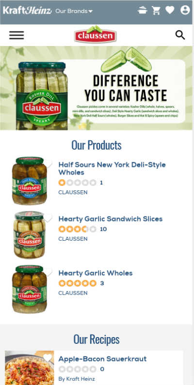
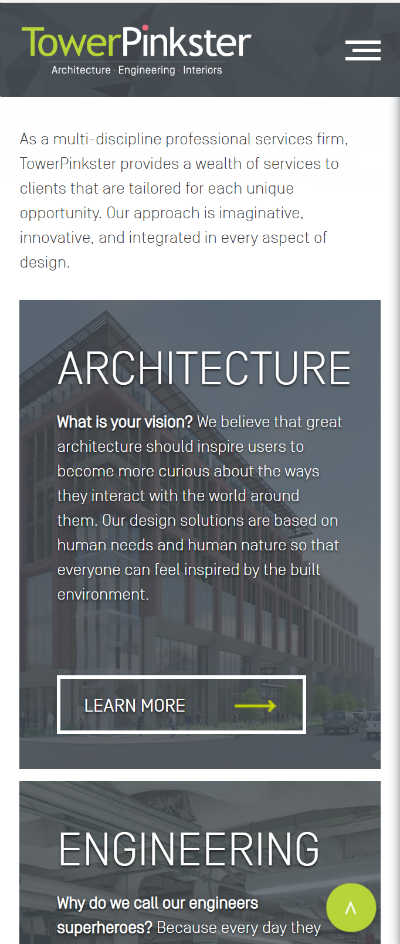

Fitts Law
Hewlett Packard
The large buttons help in identifying which category and where to click quickly.
Rule of Thirds
Kraft Heinz
myfoodandfamily.com/brands/claussen
The main and graphics utilizes the rule of thirds. The image of the jar is off to the side allowing for text and other visuls.
PARC: Proximity
Tower Pinkster
The text is layed out to show groupings of services available.